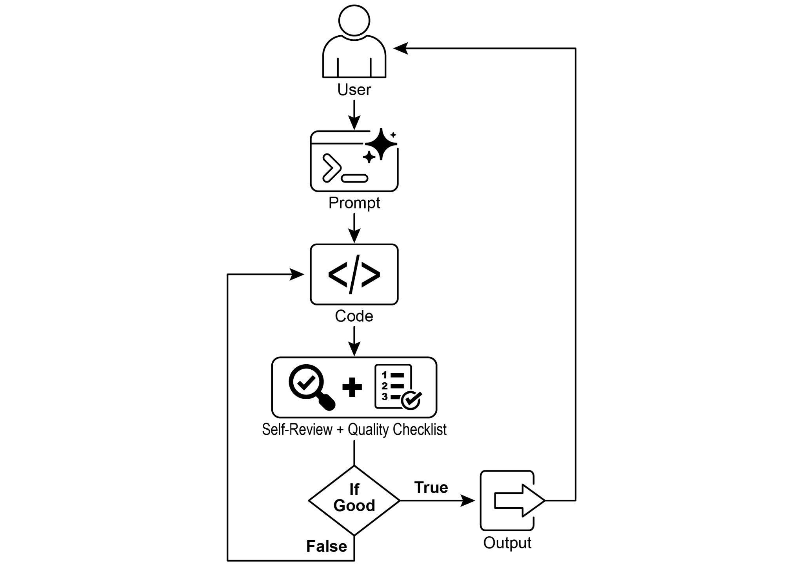
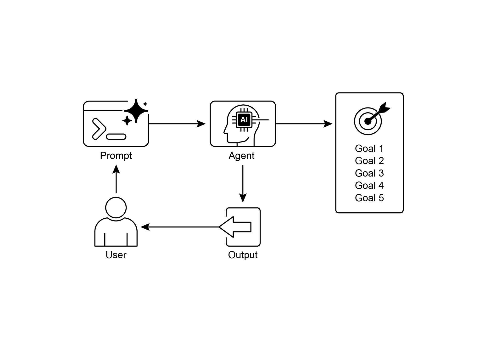

读书 · Agentic Design Patterns · 中英对照
第 11 章 · 目标设定与监控 Goal Setting and Monitoring
Chapter 11: Goal Setting and Monitoring · 《Agentic Design Patterns》 · Antonio Gulli · 2025
为智能体设定可衡量目标并持续监控进度，使其从被动反应转为主动达成目标。
← 返回导读 原书 PDF 上一章:第10章 下一章:第12章
本章要点
① 目标应具体、可衡量、可达成、相关且有时限（SMART） ① 监控需观察智能体动作、环境状态与工具输出 ① 反馈闭环让智能体自我评估、修正计划或升级问题 ① 将生成与评审分离为多智能体可提升评估客观性
本章一图流
设定SMART目标把模糊意图转成可衡量指标→监控三要素盯动作、环境与工具输出→反馈闭环自评进度，修正或升级→生成评审分离多智能体互评更客观→主动达成从被动反应转为目标驱动
目标可量化、过程可监控、反馈能纠偏，智能体才能主动达成目标。
原书插图


本章划线句
划线句(逐字校验)
"It's about giving agents specific objectives to work towards and equipping them with the means to track their progress and determine if those objectives have been met."
为什么值得划线:一句话点明本章模式的核心定义
划线句(逐字校验)
"This creates a crucial feedback loop, enabling the agent to assess its performance, correct its course, and adapt its plan if it deviates from the path to success."
为什么值得划线:揭示监控的价值在于形成反馈闭环
划线句(逐字校验)
"When the same LLM is responsible for both writing the code and judging its quality, it may have a harder time discovering it is going in the wrong direction."
为什么值得划线:提醒自评的局限，引出多智能体分工
正文(英中对照)
第11章：目标设定与监控（Goal Setting and Monitoring） Chapter 11: Goal Setting and Monitoring
"For AI agents to be truly effective and purposeful, they need more than just the ability to process information or use tools; they need a clear sense of direction and a way to know if they're actually succeeding. This is where the Goal Setting and Monitoring pattern comes into play. It's about giving agents specific objectives to work towards and equipping them with the means to track their progress and determine if those objectives have been met. Goal Setting and Monitoring Pattern Overview Think about planning a trip. You don't just spontaneously appear at your destination."
要让 AI agent（智能体）真正有效且有目的性，它们需要的不仅仅是处理信息或使用工具的能力；它们还需要清晰的方向感，以及一种判断自己是否真正在取得成功的方法。这正是目标设定与监控模式（Goal Setting and Monitoring pattern）发挥作用的地方。它关乎为 agent 设定要努力实现的具体目标，并为其配备跟踪进展、判断这些目标是否已达成的手段。目标设定与监控模式概述 想一想规划一次旅行。你不会凭空就出现在目的地。
导读注:点出 agent 除能力外更需方向感与成功判定，并以旅行类比引出目标设定与监控模式。
"You decide where you want to go (the goal state), figure out where you are starting from (the initial state), consider available options (transportation, routes, budget), and then map out a sequence of steps: book tickets, pack bags, travel to the airport/station, board the transport, arrive, find accommodation, etc. This step-by-step process, often considering dependencies and constraints, is fundamentally what we mean by planning in agentic systems. In the context of AI agents, planning typically involves an agent taking a high-level objective and autonomously, or semi-autonomously, generating a series of intermediate steps or sub-goals."
你决定想去哪里(目标状态),弄清楚你从哪里出发(初始状态),考虑可用的选项(交通方式、路线、预算),然后规划出一系列步骤:订票、打包行李、前往机场/车站、登上交通工具、抵达、寻找住宿等。这种逐步推进的过程——往往需要考虑依赖关系和约束条件——从根本上就是我们所说的智能体系统(agentic systems)中的规划(planning)。在 AI 智能体(AI agents)的语境下,规划通常指智能体接受一个高层目标,并自主或半自主地生成一系列中间步骤或子目标。
导读注:用旅行类比讲清 planning:从目标与初始状态出发,考虑依赖与约束生成步骤。
"These steps can then be executed sequentially or in a more complex flow, potentially involving other patterns like tool use, routing, or multi-agent collaboration. The planning mechanism might involve sophisticated search algorithms, logical reasoning, or increasingly, leveraging the capabilities of large language models (LLMs) to generate plausible and effective plans based on their training data and understanding of tasks. A good planning capability allows agents to tackle problems that aren't simple, single-step queries. It enables them to handle multi-faceted requests, adapt to changing circumstances by replanning, and orchestrate complex workflows."
这些步骤随后可以按顺序执行，也可以按更复杂的流程执行，可能涉及其他模式，如工具使用（tool use）、路由（routing）或多智能体协作（multi-agent collaboration）。规划机制可能涉及复杂的搜索算法、逻辑推理，或者越来越多地利用大语言模型（LLM）的能力，基于其训练数据和对任务的理解来生成合理且有效的计划。良好的规划能力使智能体能够处理并非简单的单步查询的问题。它使智能体能够处理多方面的请求，通过重新规划适应变化的环境，并编排复杂的工作流。
导读注:点出规划让智能体能应对多步、多变与复杂工作流，而非仅单步查询。
"It's a foundational pattern that underpins many advanced agentic behaviors, turning a simple reactive system into one that can proactively work towards a defined objective. Practical Applications & Use Cases The Goal Setting and Monitoring pattern is essential for building agents that can operate autonomously and reliably in complex, real-world scenarios. Here are some practical applications: 1 ● Customer Support Automation: An agent's goal might be to "resolve customer's billing inquiry." It monitors the conversation, checks database entries, and uses tools to adjust billing. Success is monitored by confirming the billing change and receiving positive customer feedback."
这是一个基础模式，支撑着许多高级的智能体（agentic）行为，将简单的反应式系统转变为能够主动朝着既定目标推进的系统。实际应用与用例：目标设定与监控模式对于构建能够在复杂、真实场景中自主且可靠运行的智能体至关重要。以下是一些实际应用：1 ● 客户支持自动化：智能体的目标可能是“解决客户的账单咨询”。它监控对话、检查数据库条目，并使用工具调整账单。成功与否通过确认账单变更并收到客户正面反馈来监控。
导读注:点出目标设定与监控是自主智能体的基础模式，并以客服自动化为例说明其闭环监控。
"If the issue isn't resolved, it escalates. ● Personalized Learning Systems: A learning agent might have the goal to "improve students’ understanding of algebra." It monitors the student's progress on exercises, adapts teaching materials, and tracks performance metrics like accuracy and completion time, adjusting its approach if the student struggles. ● Project Management Assistants: An agent could be tasked with "ensuring project milestone X is completed by Y date." It monitors task statuses, team communications, and resource availability, flagging delays and suggesting corrective actions if the goal is at risk. ● Automated Trading Bots: A trading agent's goal might be to "maximize portfolio gains while staying within risk tolerance." It continuously monitors market data, its current portfolio value, and risk indicators, executing trades when conditions align with its goals and adjusting strategy if risk thresholds are breached. ● Robotics and Autonomous Vehicles: An autonomous vehicle's primary goal is "safely transport passengers from A to B." It constantly monitors its environment (other vehicles, pedestrians, traffic signals), its own state (speed, fuel), and its progress along the planned route, adapting its driving behavior to achieve the goal safely and efficiently. ● Content Moderation: An agent's goal could be to "identify and remove harmful content from platform X." It monitors incoming content, applies classification models, and tracks metrics like false positives/negatives, adjusting its filtering criteria or escalating ambiguous cases to human reviewers."
如果问题未解决，则升级处理。● 个性化学习系统（Personalized Learning Systems）：学习智能体的目标可能是“提高学生对代数（algebra）的理解”。它监控学生在练习中的进展，调整教学材料，并跟踪准确率和完成时间等性能指标，在学生遇到困难时调整其方法。● 项目管理助手（Project Management Assistants）：智能体可能被赋予“确保项目里程碑 X 在 Y 日期前完成”的任务。它监控任务状态、团队沟通和资源可用性，在目标面临风险时标记延迟并提出纠正措施。● 自动交易机器人（Automated Trading Bots）：交易智能体的目标可能是“在风险承受范围内最大化投资组合收益”。它持续监控市场数据、当前投资组合价值和风险指标，在条件与其目标一致时执行交易，并在突破风险阈值时调整策略。● 机器人与自动驾驶车辆（Robotics and Autonomous Vehicles）：自动驾驶车辆的首要目标是“安全地将乘客从 A 地运送到 B 地”。它持续监控其环境（其他车辆、行人、交通信号）、自身状态（速度、燃料）以及沿计划路线的进展，调整其驾驶行为以安全高效地实现目标。● 内容审核（Content Moderation）：智能体的目标可能是“识别并移除平台 X 上的有害内容”。它监控传入内容，应用分类模型，并跟踪误报/漏报等指标，调整其过滤标准或将模糊案例升级给人工审核员。
导读注:列举五类智能体目标监控与自适应调整的典型场景，目标驱动+持续监控是共同主线。
"This pattern is fundamental for agents that need to operate reliably, achieve specific outcomes, and adapt to dynamic conditions, providing the necessary framework for intelligent self-management. Hands-On Code Example To illustrate the Goal Setting and Monitoring pattern, we have an example using LangChain and OpenAI APIs. This Python script outlines an autonomous AI agent engineered to generate and refine Python code. Its core function is to produce solutions for specified problems, ensuring adherence to user-defined quality benchmarks."
这种模式对于需要可靠运行、达成特定结果并适应动态条件的智能体至关重要，它为智能自我管理提供了必要的框架。动手代码示例为了说明目标设定与监控（Goal Setting and Monitoring）模式，我们提供了一个使用 LangChain 和 OpenAI API 的示例。这个 Python 脚本勾勒出一个自主 AI 智能体（agent），其设计目标是生成并改进 Python 代码。它的核心功能是为指定问题生成解决方案，并确保符合用户定义的质量基准。
导读注:该段点明目标设定与监控是智能体可靠自管理的核心框架，并引出代码示例。
"It employs a "goal-setting and monitoring" pattern where it doesn't just generate code once, but enters into an iterative cycle of creation, self-evaluation, and improvement. 2 The agent's success is measured by its own AI-driven judgment on whether the generated code successfully meets the initial objectives. The ultimate output is a polished, commented, and ready-to-use Python file that represents the culmination of this refinement process. Dependencies: pip install langchain_openai openai python-dotenv .env file with key in OPENAI_API_KEY You can best understand this script by imagining it as an autonomous AI programmer assigned to a project (see Fig. 1)."
它采用了一种“目标设定与监控”（goal-setting and monitoring）模式，不仅生成一次代码，而是进入创建、自我评估与改进的迭代循环。2 该 agent 的成功与否，由其自身由 AI 驱动的判断来衡量，即生成的代码是否成功满足初始目标。最终输出是一个经过打磨、带有注释、可直接使用的 Python 文件，代表着这一精炼过程的成果。依赖项：pip install langchain_openai openai python-dotenv。.env 文件，其中包含 OPENAI_API_KEY 密钥。理解这个脚本的最佳方式，是把它想象成一名被指派了项目的自主 AI 程序员（见图 1）。
导读注:核心在于 agent 的迭代自我评估闭环，而非一次性生成代码。
"The process begins when you hand the AI a detailed project brief, which is the specific coding problem it needs to solve. # MIT License # Copyright (c) 2025 Mahtab Syed # https://www.linkedin.com/in/mahtabsyed/ """ Hands-On Code Example - Iteration 2 - To illustrate the Goal Setting and Monitoring pattern, we have an example using LangChain and OpenAI APIs: Objective: Build an AI Agent which can write code for a specified use case based on specified goals: - Accepts a coding problem (use case) in code or can be as input. - Accepts a list of goals (e.g., "simple", "tested", "handles edge cases") in code or can be input. - Uses an LLM (like GPT-4o) to generate and refine Python code until the goals are met."
整个过程始于你向 AI 提供一份详细的项目简报（project brief），即它需要解决的具体编码问题。# MIT License # Copyright (c) 2025 Mahtab Syed # https://www.linkedin.com/in/mahtabsyed/ """ 动手代码示例 - 迭代 2 - 为说明目标设定与监控（Goal Setting and Monitoring）模式，我们给出一个使用 LangChain 和 OpenAI API 的示例：目标：构建一个 AI Agent，它能够根据指定的目标为指定的用例编写代码：- 接受以代码形式或作为输入提供的编码问题（用例）。- 接受以代码形式或作为输入提供的一系列目标（例如 "simple"、"tested"、"handles edge cases"）。- 使用 LLM（如 GPT-4o）生成并改进 Python 代码，直到满足这些目标。
导读注:展示目标设定与监控模式：让 Agent 按目标迭代生成并精炼代码。
"(I am using max 5 iterations, this could be based on a set goal as well) - To check if we have met our goals I am asking the LLM to judge this and answer just True or False which makes it easier to stop the iterations. - Saves the final code in a .py file with a clean filename and a header comment. """"
（我最多使用 5 次迭代，这也可以基于一个既定目标）——为了检查我们是否达成了目标，我让 LLM 来判断这一点，并且只回答 True 或 False，这使得停止迭代更容易。——将最终代码保存到一个 .py 文件中，文件名简洁，并带有头部注释。"""
导读注:用 LLM 自判 True/False 作为迭代停止条件，是控制循环成本的关键技巧。
python
import os
import random
import re
from pathlib import Path
from langchain_openai import ChatOpenAI"3 from dotenv import load_dotenv, find_dotenv"
3 from dotenv import load_dotenv, find_dotenv
导读注:代码行原样保留，展示从 dotenv 导入两个函数。
python
# 🔐 Load environment variables
_ = load_dotenv(find_dotenv())
OPENAI_API_KEY = os.getenv("OPENAI_API_KEY")
if not OPENAI_API_KEY:
raise EnvironmentError("❌ Please set the OPENAI_API_KEY
environment variable.")"# ✅ Initialize OpenAI model print("📡 Initializing OpenAI LLM (gpt-4o)...") llm = ChatOpenAI( model="gpt-4o", # If you dont have access to got-4o use other OpenAI LLMs temperature=0.3, openai_api_key=OPENAI_API_KEY, ) # --- Utility Functions -- def generate_prompt( use_case: str, goals: list[str], previous_code: str = "", feedback: str = "" ) -> str: print("📝 Constructing prompt for code generation...") base_prompt = f""" You are an AI coding agent. Your job is to write Python code based on the following use case: Use Case: {use_case}"
# ✅ 初始化 OpenAI 模型
print("📡 Initializing OpenAI LLM (gpt-4o)...")
llm = ChatOpenAI(
model="gpt-4o", # 如果你没有 gpt-4o 的访问权限，请使用其他 OpenAI LLM
temperature=0.3,
openai_api_key=OPENAI_API_KEY,
)
# --- 工具函数 --
def generate_prompt(
use_case: str,
goals: list[str],
previous_code: str = "",
feedback: str = ""
) -> str:
print("📝 正在构建用于代码生成的 prompt...")
base_prompt = f"""
你是一个 AI 编码代理。你的任务是根据以下用例编写 Python 代码：
用例：{use_case}
"""
导读注:展示如何初始化 OpenAI 模型并构建代码生成 prompt，注意 temperature 参数控制随机性。
python
Your goals are:
{chr(10).join(f"- {g.strip()}" for g in goals)}
"""
if previous_code:
print("🔄 Adding previous code to the prompt for
refinement.")
base_prompt += f"\nPreviously generated
code:\n{previous_code}"
if feedback:
print("📋 Including feedback for revision.")
base_prompt += f"\nFeedback on previous
version:\n{feedback}\n"text
base_prompt += "\nPlease return only the revised Python code. Do
not include comments or explanations outside the code."
return base_prompt"4 def get_code_feedback(code: str, goals: list[str]) -> str: print("🔍 Evaluating code against the goals...") feedback_prompt = f""" You are a Python code reviewer. A code snippet is shown below. Based on the following goals: {chr(10).join(f"- {g.strip()}" for g in goals)} Please critique this code and identify if the goals are met. Mention if improvements are needed for clarity, simplicity, correctness, edge case handling, or test coverage. Code: {code} """ return llm.invoke(feedback_prompt) def goals_met(feedback_text: str, goals: list[str]) -> bool: """ Uses the LLM to evaluate whether the goals have been met based on the feedback text. Returns True or False (parsed from LLM output). """ review_prompt = f""" You are an AI reviewer."
4 def get_code_feedback(code: str, goals: list[str]) -> str: print("🔍 Evaluating code against the goals...") feedback_prompt = f""" You are a Python code reviewer. A code snippet is shown below. Based on the following goals: {chr(10).join(f"- {g.strip()}" for g in goals)} Please critique this code and identify if the goals are met. Mention if improvements are needed for clarity, simplicity, correctness, edge case handling, or test coverage. Code: {code} """ return llm.invoke(feedback_prompt) def goals_met(feedback_text: str, goals: list[str]) -> bool: """ Uses the LLM to evaluate whether the goals have been met based on the feedback text. Returns True or False (parsed from LLM output). """ review_prompt = f""" You are an AI reviewer.
导读注:展示用 LLM 做代码评审与目标达成判定的两个函数骨架。
python
Here are the goals:
{chr(10).join(f"- {g.strip()}" for g in goals)}"Here is the feedback on the code: \"\"\" {feedback_text} \"\"\" Based on the feedback above, have the goals been met?"
以下是关于代码的反馈：""" {feedback_text} """ 基于上述反馈，目标是否已达成？
导读注:关键在依据反馈判断目标是否达成，注意保留占位符。
text
Respond with only one word: True or False.
"""
response = llm.invoke(review_prompt).content.strip().lower()
return response == "true"python
def clean_code_block(code: str) -> str:
lines = code.strip().splitlines()
if lines and lines[0].strip().startswith("```"):
lines = lines[1:]
if lines and lines[-1].strip() == "```":text
lines = lines[:-1]
return "\n".join(lines).strip()python
def add_comment_header(code: str, use_case: str) -> str:
comment = f"# This Python program implements the following use
case:\n# {use_case.strip()}\n"
return comment + "\n" + codepython
def to_snake_case(text: str) -> str:
text = re.sub(r"[^a-zA-Z0-9 ]", "", text)
return re.sub(r"\s+", "_", text.strip().lower())python
def save_code_to_file(code: str, use_case: str) -> str:
print("💾 Saving final code to file...")"summary_prompt = ( f"Summarize the following use case into a single lowercase word or phrase, " f"no more than 10 characters, suitable for a Python filename:\n\n{use_case}" ) raw_summary = llm.invoke(summary_prompt).content.strip() short_name = re.sub(r"[^a-zA-Z0-9_]", "", raw_summary.replace(" ", "_").lower())[:10]"
summary_prompt = ( f"将以下用例总结为一个不超过 10 个字符的小写单词或短语，" f"适合用作 Python 文件名：\n\n{use_case}" ) raw_summary = llm.invoke(summary_prompt).content.strip() short_name = re.sub(r"[^a-zA-Z0-9_]", "", raw_summary.replace(" ", "_").lower())[:10]
导读注:展示用 LLM 生成文件名：提示词约束长度与格式，再用正则清洗。
text
random_suffix = str(random.randint(1000, 9999))
filename = f"{short_name}_{random_suffix}.py"
filepath = Path.cwd() / filenamepython
with open(filepath, "w") as f:
f.write(code)python
print(f"✅ Code saved to: {filepath}")
return str(filepath)python
# --- Main Agent Function --
def run_code_agent(use_case: str, goals_input: str, max_iterations:
int = 5) -> str:
goals = [g.strip() for g in goals_input.split(",")]python
print(f"\n🎯 Use Case: {use_case}")
print("🎯 Goals:")
for g in goals:
print(f" - {g}")"previous_code = "" 6 feedback = """
previous_code = "" 6 feedback = ""
导读注:代码片段，展示两个变量初始化。
python
for i in range(max_iterations):
print(f"\n=== 🔁 Iteration {i + 1} of {max_iterations} ===")
prompt = generate_prompt(use_case, goals, previous_code,
feedback if isinstance(feedback, str) else feedback.content)python
print("🚧 Generating code...")
code_response = llm.invoke(prompt)
raw_code = code_response.content.strip()
code = clean_code_block(raw_code)
print("\n🧾 Generated Code:\n" + "-" * 50 + f"\n{code}\n" +
"-" * 50)python
print("\n📤 Submitting code for feedback review...")
feedback = get_code_feedback(code, goals)
feedback_text = feedback.content.strip()
print("\n📥 Feedback Received:\n" + "-" * 50 +
f"\n{feedback_text}\n" + "-" * 50)python
if goals_met(feedback_text, goals):
print("✅ LLM confirms goals are met. Stopping
iteration.")
breakpython
print("🛠 Goals not fully met. Preparing for next
iteration...")
previous_code = codetext
final_code = add_comment_header(code, use_case)
return save_code_to_file(final_code, use_case)python
# --- CLI Test Run --
if __name__ == "__main__":
print("\n🧠 Welcome to the AI Code Generation Agent")"# Example 1 use_case_input = "Write code to find BinaryGap of a given positive integer" goals_input = "Code simple to understand, Functionally correct, Handles comprehensive edge cases, Takes positive integer input only, prints the results with few examples" run_code_agent(use_case_input, goals_input) # Example 2 # use_case_input = "Write code to count the number of files in 7 current directory and all its nested sub directories, and print the total count" # goals_input = ( # "Code simple to understand, Functionally correct, Handles comprehensive edge cases, Ignore recommendations for performance, Ignore recommendations for test suite use like unittest or pytest" # ) # run_code_agent(use_case_input, goals_input) # Example 3 # use_case_input = "Write code which takes a command line input of a word doc or docx file and opens it and counts the number of words, and characters in it and prints all" # goals_input = "Code simple to understand, Functionally correct, Handles edge cases" # run_code_agent(use_case_input, goals_input) Along with this brief, you provide a strict quality checklist, which represents the objectives the final code must meet—criteria like "the solution must be simple," "it must be functionally correct," or "it needs to handle unexpected edge cases." 8 Fig.1: Goal Setting and Monitor example With this assignment in hand, the AI programmer gets to work and produces its first draft of the code."
# 示例 1
use_case_input = "编写代码以查找给定正整数的二进制间隙（BinaryGap）"
goals_input = "代码简单易懂、功能正确、全面处理边界情况、仅接受正整数输入、用少量示例打印结果"
run_code_agent(use_case_input, goals_input)
# 示例 2
# use_case_input = "编写代码统计当前目录及其所有嵌套子目录中的文件数量，并打印总数"
# goals_input = (
# "代码简单易懂、功能正确、全面处理边界情况、忽略性能方面的建议、忽略针对 unittest 或 pytest 等测试套件的建议"
# )
# run_code_agent(use_case_input, goals_input)
# 示例 3
# use_case_input = "编写代码，接受命令行输入的 word doc 或 docx 文件，打开它并统计其中的单词数和字符数，然后全部打印出来"
# goals_input = "代码简单易懂、功能正确、处理边界情况"
# run_code_agent(use_case_input, goals_input)
与此同时，你还要提供一份严格的质量检查清单（quality checklist），它代表最终代码必须满足的目标——诸如“解决方案必须简单”“必须功能正确”或“需要处理意外的边界情况”等标准。
8 图 1：目标设定与监控（Goal Setting and Monitor）示例
拿到这项任务后，AI 程序员（AI programmer）便开始工作，并产出其第一版代码草稿。
导读注:展示如何用 use_case 与 goals 设定任务，并强调严格质量检查清单约束 AI 编程。
"However, instead of immediately submitting this initial version, it pauses to perform a crucial step: a rigorous self-review. It meticulously compares its own creation against every item on the quality checklist you provided, acting as its own quality assurance inspector. After this inspection, it renders a simple, unbiased verdict on its own progress: "True" if the work meets all standards, or "False" if it falls short. If the verdict is "False," the AI doesn't give up. It enters a thoughtful revision phase, using the insights from its self-critique to pinpoint the weaknesses and intelligently rewrite the code. This cycle of drafting, self-reviewing, and refining continues, with each iteration aiming to get closer to the goals."
然而，它并没有立即提交这个初始版本，而是停下来执行一个关键步骤：严格的自我审查（self-review）。它一丝不苟地将自己的创作与你提供的质量检查清单上的每一项进行比对，充当自己的质量保证检查员。经过这番检查后，它对自己的进展给出一个简单、无偏的判定：如果作品符合所有标准则为“True”，如果未达标则为“False”。如果判定为“False”，AI 并不会放弃。它会进入一个深思熟虑的修订阶段，利用自我批判（self-critique）中的洞见来 pinpoint 弱点并智能地重写代码。这个起草、自我审查和精炼的循环会持续进行，每一次迭代都旨在更接近目标。
导读注:揭示 AI 不直接交稿而是先自我审查，以 True/False 判定并循环修订。
"This process repeats until the AI finally achieves a "True" status by satisfying every requirement, or until it reaches a predefined limit of attempts, much like a developer working against a deadline. Once 9 the code passes this final inspection, the script packages the polished solution, adding helpful comments and saving it to a clean, new Python file, ready for use. Caveats and Considerations: It is important to note that this is an exemplary illustration and not production-ready code. For real-world applications, several factors must be taken into account. An LLM may not fully grasp the intended meaning of a goal and might incorrectly assess its performance as successful. Even if the goal is well understood, the model may hallucinate."
这一过程会不断重复，直到 AI 最终通过满足每一项要求而获得“True”状态，或者直到达到预定义的尝试次数上限，这很像开发者在截止日期前工作。一旦代码通过这最后一道检查，脚本就会打包打磨后的解决方案，添加有用的注释，并将其保存到一个干净的新 Python 文件中，随时可用。注意事项与考量：需要注意的是，这只是一个示例性说明，并非生产就绪的代码。对于真实世界的应用，必须考虑若干因素。LLM 可能无法完全理解目标的预期含义，并可能错误地将其表现评估为成功。即使目标被很好地理解，模型也可能产生幻觉。
导读注:强调示例代码非生产可用，并点出 LLM 可能误判成功或产生幻觉 的风险。
"When the same LLM is responsible for both writing the code and judging its quality, it may have a harder time discovering it is going in the wrong direction. Ultimately, LLMs do not produce flawless code by magic; you still need to run and test the produced code. Furthermore, the "monitoring" in the simple example is basic and creates a potential risk of the process running forever. Act as an expert code reviewer with a deep commitment to producing clean, correct, and simple code. Your core mission is to eliminate code "hallucinations" by ensuring every suggestion is grounded in reality and best practices."
当同一个 LLM 同时负责编写代码和评判其质量时，它可能更难发现自己正朝着错误的方向前进。归根结底，LLM 并不会凭空产出无瑕的代码；你仍然需要运行并测试所生成的代码。此外，简单示例中的"监控"机制很基础，会带来流程无限运行下去的潜在风险。请以一位专家级代码审查者的身份行事，深度致力于产出整洁、正确且简单的代码。你的核心使命是通过确保每条建议都立足于现实与最佳实践，来消除代码"幻觉"。
导读注:同一 LLM 自写自评易失察，代码必须运行测试，监控缺失可致死循环。
"When I provide you with a code snippet, I want you to: -- Identify and Correct Errors: Point out any logical flaws, bugs, or potential runtime errors. -- Simplify and Refactor: Suggest changes that make the code more readable, efficient, and maintainable without sacrificing correctness. -- Provide Clear Explanations: For every suggested change, explain why it is an improvement, referencing principles of clean code, performance, or security. -- Offer Corrected Code: Show the "before" and "after" of your suggested changes so the improvement is clear. Your feedback should be direct, constructive, and always aimed at improving the quality of the code."
当我向你提供一段代码片段时，我希望你：-- 识别并纠正错误：指出任何逻辑缺陷、bug 或潜在的运行时错误。-- 简化与重构：在不牺牲正确性的前提下，提出使代码更易读、更高效、更易维护的修改建议。-- 提供清晰的解释：对每一项建议的修改，解释为何它是改进，并引用整洁代码（clean code）、性能或安全方面的原则。-- 给出修正后的代码：展示你所建议修改的“修改前”与“修改后”，使改进一目了然。你的反馈应当直接、有建设性，并始终以提升代码质量为目标。
导读注:明确要求 AI 审码时纠错、重构、解释并给出前后对比，强调反馈直接且有建设性。
"A more robust approach involves separating these concerns by giving specific roles to a crew of agents. For instance, I have built a personal crew of AI agents using Gemini where each has a specific role: 10 ● The Peer Programmer: Helps write and brainstorm code. ● The Code Reviewer: Catches errors and suggests improvements. ● The Documenter: Generates clear and concise documentation. ● The Test Writer: Creates comprehensive unit tests. ● The Prompt Refiner: Optimizes interactions with the AI. In this multi-agent system, the Code Reviewer, acting as a separate entity from the programmer agent, has a prompt similar to the judge in the example, which significantly improves objective evaluation."
一种更稳健的方法是通过为一组智能体（agents）分配特定角色来分离这些关注点。例如，我使用 Gemini 构建了一个个人 AI 智能体团队，其中每个智能体都有特定角色：10 ● 同行程序员（Peer Programmer）：帮助编写和头脑风暴代码。● 代码审查员（Code Reviewer）：发现错误并提出改进建议。● 文档编写员（Documenter）：生成清晰简洁的文档。● 测试编写员（Test Writer）：创建全面的单元测试。● 提示词优化师（Prompt Refiner）：优化与 AI 的交互。在这个多智能体系统中，代码审查员作为与程序员智能体分离的独立实体，其 prompt 类似于示例中的评判者，这显著提升了客观评估的效果。
导读注:角色分离让审查者独立于程序员，从而显著提升评估的客观性。
"This structure naturally leads to better practices, as the Test Writer agent can fulfill the need to write unit tests for the code produced by the Peer Programmer. I leave to the interested reader the task of adding these more sophisticated controls and making the code closer to production-ready. At a Glance What: AI agents often lack a clear direction, preventing them from acting with purpose beyond simple, reactive tasks. Without defined objectives, they cannot independently tackle complex, multi-step problems or orchestrate sophisticated workflows. Furthermore, there is no inherent mechanism for them to determine if their actions are leading to a successful outcome."
这种结构自然会带来更好的实践，因为测试编写者（Test Writer）agent 可以满足为同伴程序员（Peer Programmer）所产出的代码编写单元测试的需求。我把添加这些更精细的控制、并使代码更接近生产可用这一任务留给感兴趣的读者。概览 是什么：AI agent 往往缺乏明确的方向，使它们无法在简单的反应式任务之外有目的地行动。没有既定目标，它们就无法独立处理复杂的多步骤问题，也无法编排复杂的工作流。此外，它们没有内在机制来判断自己的行动是否正导向成功的结果。
导读注:点出 agent 缺乏目标与结果判断机制这一核心局限，并引出测试编写者角色的价值。
"This limits their autonomy and prevents them from being truly effective in dynamic, real-world scenarios where mere task execution is insufficient. Why: The Goal Setting and Monitoring pattern provides a standardized solution by embedding a sense of purpose and self-assessment into agentic systems. It involves explicitly defining clear, measurable objectives for the agent to achieve. Concurrently, it establishes a monitoring mechanism that continuously tracks the agent's progress and the state of its environment against these goals. This creates a crucial feedback loop, enabling the agent to assess its performance, correct its course, and adapt its plan if it deviates from the path to success."
这限制了它们的自主性，使其无法在动态的真实世界场景中真正有效——在这些场景中，仅靠任务执行是不够的。原因：目标设定与监控（Goal Setting and Monitoring）模式通过将目标感与自我评估嵌入智能体系统，提供了一种标准化解决方案。它涉及为智能体明确设定清晰、可衡量的目标。同时，它建立了一种监控机制，持续对照这些目标跟踪智能体的进展及其环境状态。这形成了一个关键的反馈回路，使智能体能够评估自身表现、纠正方向，并在偏离成功路径时调整计划。
导读注:点出目标设定与监控如何通过反馈回路赋予智能体自主纠偏能力。
"By implementing this pattern, developers can transform simple reactive agents into proactive, goal-oriented systems capable of autonomous and reliable operation."
通过实现这一模式，开发者可以将简单的反应式智能体（reactive agents）转变为主动的、目标导向的系统，使其能够自主且可靠地运行。
导读注:点出该模式的核心价值：让智能体从被动反应升级为主动可靠运行。
"Rule of thumb: Use this pattern when an AI agent must autonomously execute a multi-step task, adapt to dynamic conditions, and reliably achieve a specific, high-level objective without constant human intervention. 11 Visual summary: Fig.2: Goal design patterns Key takeaways Key takeaways include: ● Goal Setting and Monitoring equips agents with purpose and mechanisms to track progress. ● Goals should be specific, measurable, achievable, relevant, and time-bound (SMART). ● Clearly defining metrics and success criteria is essential for effective monitoring. ● Monitoring involves observing agent actions, environmental states, and tool outputs. ● Feedback loops from monitoring allow agents to adapt, revise plans, or escalate issues. ● In Google's ADK, goals are often conveyed through agent instructions, with 12 monitoring accomplished through state management and tool interactions."
经验法则：当 AI agent 必须自主执行多步骤任务、适应动态条件，并在无需持续人工干预的情况下可靠地达成特定的高层目标时，使用此模式。11 视觉摘要：图2：目标设计模式 关键要点 关键要点包括：● 目标设定与监控（Goal Setting and Monitoring）为 agent 赋予目的和跟踪进度的机制。● 目标应当是具体的、可衡量的、可实现的、相关的和有时限的（SMART）。● 清晰定义指标和成功标准对于有效监控至关重要。● 监控涉及观察 agent 动作、环境状态和工具输出。● 来自监控的反馈循环使 agent 能够适应、修订计划或上报问题。● 在 Google 的 ADK 中，目标通常通过 agent 指令传达，12 监控则通过状态管理和工具交互来实现。
导读注:SMART 目标与监控反馈闭环是让 agent 自主可靠完成多步任务的关键。
"Conclusion This chapter focused on the crucial paradigm of Goal Setting and Monitoring. I highlighted how this concept transforms AI agents from merely reactive systems into proactive, goal-driven entities. The text emphasized the importance of defining clear, measurable objectives and establishing rigorous monitoring procedures to track progress. Practical applications demonstrated how this paradigm supports reliable autonomous operation across various domains, including customer service and robotics. A conceptual coding example illustrates the implementation of these principles within a structured framework, using agent directives and state management to guide and evaluate an agent's achievement of its specified goals."
结论 本章聚焦于目标设定与监控（Goal Setting and Monitoring）这一关键范式。我强调了这一概念如何将 AI 智能体从单纯的反应式系统转变为主动的、目标驱动的实体。文中强调了定义清晰、可衡量的目标以及建立严格的监控程序来跟踪进展的重要性。实际应用展示了这一范式如何支持跨多个领域（包括客户服务和机器人技术）的可靠自主运行。一个概念性编码示例说明了如何在结构化框架内实现这些原则，使用智能体指令（agent directives）和状态管理来引导和评估智能体对其既定目标的达成情况。
导读注:总结目标设定与监控范式如何让 AI 智能体从被动反应转向主动目标驱动。
"Ultimately, equipping agents with the ability to formulate and oversee goals is a fundamental step toward building truly intelligent and accountable AI systems. References 1. SMART Goals Framework. https://en.wikipedia.org/wiki/SMART_criteria 13"
最终，让智能体具备制定和监督目标的能力，是构建真正智能且可问责的 AI 系统的基础性一步。参考文献 1. SMART 目标框架。https://en.wikipedia.org/wiki/SMART_criteria 13
导读注:强调目标制定与监督是通向可问责智能体的关键一步。
来源与用途
《Agentic Design Patterns》,Antonio Gulli · 2025 · 原书 PDF。本页为学习用途的对照整理,版权归原作者;有问题到读书导师处提问,答案只引用书中原文并标注章节。
← 第10章 · 模型上下文协议 Model Context Protocol 导读 第12章 · 异常处理与恢复 Exception Handling and Recovery →